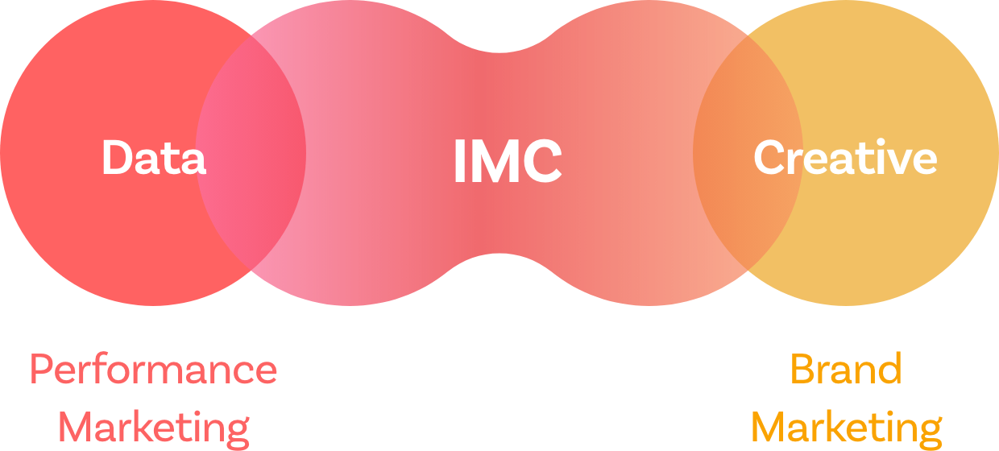

데이터에 공감을 더해
확실한 성과를 만듭니다.

브랜드에 대한 통찰력을
바탕으로 체계적인 마케팅 전략 수립
브랜드 진단 및 컨셉 수립
다각적인 분석 기반의 브랜드 통합 진단 진행 및 차별화된 마케팅 방향성 제시
브랜드 콘텐츠 제작
공감 소구를 위한 브랜드 아이덴티티를 기획
브랜디드 콘텐츠 제작
통합 마케팅 운영전략 제시
온 오프라인 다양한 채널을 활용한 통합 마케팅(IMC) 운영 전략 수립
Process
>
>
>
데이터 분석 및 전략 개선을 통한 광고 효율 극대화
합리적인 예산 운영
맞춤 예산으로 성과와 캠페인 효율성을 극대화
고도화된 타겟팅
인구통계학적 정보, 관심사, 구매의도 등 다양한
고객 데이터를 활용하여 타겟팅을 세분화
마케팅 최적화
성과 측정과 전략 개선 기반의 ‘저비용 고효율’의 마
케팅 전략을 발굴
Process
>
>
운영/관리
↔
최적화
앱 성장 단계에 최적화된 앱 마케팅 전략
User Acquisition 캠페인
최적화된 CPI로 신규 유저 획득을 위한 캠페인 진행
In-App Action (Quality User Acquisition) 캠페인
주요 인앱 액션 전환율 상승 유도
Re-engagement 캠페인
기존 유저 활성화를 통해 CAC 비용 절감 및 이탈 방지
Process
>
>
>
Attribution/Retention
소셜 네트워크 서비스 기반 광고
세밀한 타겟팅
개인별 SNS 계정을 기반으로 세밀한 타겟팅 진행
높은 도달률
SNS 활동과 인적 네트워크 중심의 빠르고 높은 도달률 달성
맞춤 콘텐츠
알고리즘을 기반으로 사용자에게 개인화된 콘텐츠 제공 및 맞춤 상품 추천
Process
사용자 경험을 해치지 않는 콘텐츠를
소구함으로써 광고 거부감 완화
비즈니스에 관심을 보인 충성도 높은
고객을 대상으로 전환을 효과적으로
유도
집 밖에서 접촉하는 모든 미디어
(교통, 빌보드, 엔터테인먼트 등)
효과적인 메시지 전달
반복·지속적인 노출과 임팩트 있는
시각적 효과로 브랜드 이미지·메시지 전달
강제적 노출
소비자의 옥외 활동 공간에서 자연스럽게
강제 노출 가능
지역성 광고
특정 지역 타겟팅을 통해 원하는 지역에만
집중적으로 노출
Process
>
>
>
전통적인 4대 미디어
(TV‧라디오‧잡지‧신문)
일방향적 커뮤니케이션
미디어를 사용하여 광범위한 브랜드 노출
높은 파급력
미디어로서의 영향력이 높음
브랜드 인지도
불특정 다수에게 반복적으로 메시지 전달
Process
>
>
>
>
소비자와의 대면하는 마케팅
(브랜드 캠페인, 페스티벌, 프로모션, 전시 등)
양방향적 커뮤니케이션
미디어를 사용하지 않는 양방향적 커뮤니케이션 방식
특정 타깃 대상
특정한 타깃을 정해서 메시지 전달 가능
높은 전환율
타깃의 즉각적인 반응 도출 가능
Process
>
>
>
차별화된 마케팅 인사이트 도출
마켓/경쟁사 분석
폭넓은 시장 리서치 및 경쟁사 모니터링을 통한 트렌드 파악
솔루션
키워드, 광고비, 인구통계 등 솔루션 데이터를 중심으로 유의미한 인사이트 발굴
인사이트 리포트
솔루션 데이터 및 마켓 트렌드가 반영된 리포트
정기 발간
Process
+
>